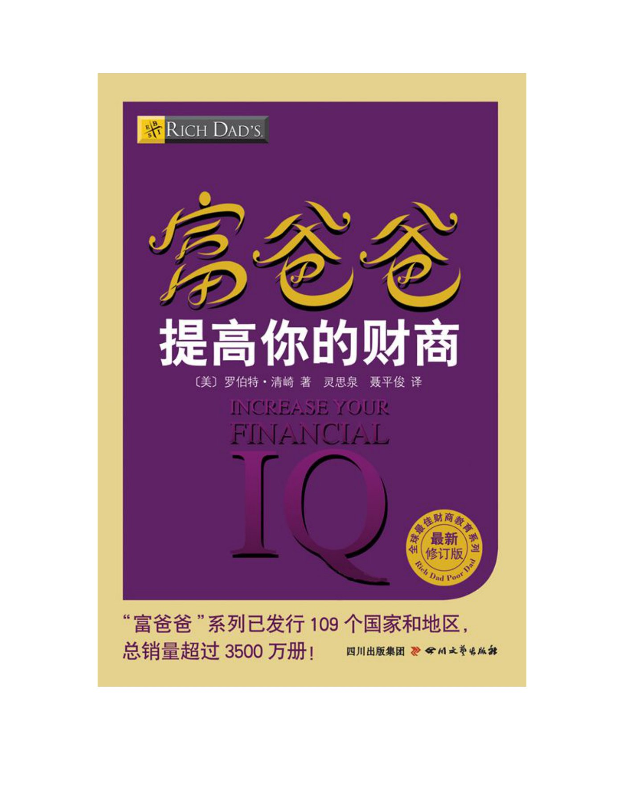

个人能力与结构性处境
本章同时承认，许多困境来自个人难以左右的结构变化：制造业岗位转移、较低工资、医疗与退休负担增加，以及作者所批评的经济政策。不能把这些段落删去，再把全部贫困都解释成个人不肯动脑。作者主张个人学习处理自己能够处理的部分，并没有证明每个人都能独自解决全国性的就业与制度问题。
合订本PDF第811—812页把赚钱、守钱、预算、杠杆与信息连起来，学习解决自己的财务问题。
依据你提供的五册合订本第四册，分别整理川普的序、作者的话与导言、十章正文。页码为合订本PDF页序。

从五种能力，到财务健全、学习与反馈
赚钱、守钱、预算、杠杆和信息分别回答不同问题；财商在本书里用结果衡量理财能力，不是一张标准智商试卷。
先读署名序和作者导言，再按原书十章继续；五种财商分别保留独立章节。
展开章节，或搜索案例与关键词
没有找到匹配内容，换个词试试。
原文署名：唐纳德·川普
川普从与清崎的合作谈起，强调教育把财富信息转成知识；这是署名序作者对本书的推荐。
唐纳德·川普在这篇序里回忆，自己在2004年认识清崎，2006年与他合著《让你赚大钱》。临近2008年时，他认为财商教育更为紧迫，并相信清崎的新书会继续说明两人此前关注的经济与财富问题。这里保留的是当时的合作背景与序作者的评价。
合订本PDF第792页川普把两人的共同经历归纳为商业、教育、创业和房地产投资，尤其赞同通过财商教育，把财富信息转为能够理解和运用的知识。成功以后仍愿意分享，是他推崇清崎写作的另一理由。他最后鼓励读者抓住学习机会、扩大自己的目标；序言由川普署名，后续正文则由清崎展开自己的论证。
合订本PDF第792—793页原文署名：罗伯特·清崎
导言把焦点从买什么转向怎样判断与行动：信息需要经过教育，才能成为可以运用的知识。
清崎先表明自己的立场：钱本身不是罪恶，缺钱、贪欲和不善用钱可能促使人作出伤害自己与他人的选择。他批评的也不是工作、学习或品格，而是人没有得到处理金钱问题的教育。他把1971年货币制度的变化看成重要分界，认为只靠努力工作、储蓄、还债和把钱交给基金，已不足以应对自己所描述的新经济环境。
合订本PDF第794—797页导言用自己的黄金经历说明，有资产也可能判断失误。1972年，他开始以每盎司约70美元买黄金；价格后来涨到800美元时，他因期待继续涨至2500美元而没有卖出。随后价格跌至500美元，他才出手；再后来又看到约250美元的低价。他承认自己没有获得原本期待的结果。案例的主角并非黄金好坏，而是贪婪、恐惧、信息与买卖时机如何影响同一个人。
合订本PDF第798—799页他又把投资比作高尔夫：没有学好动作，只买一套更贵的球杆，不会自动打得更好。同理，股票、房产、黄金、企业都是工具；在取得工具以前或同时，还需要发展运用工具的能力。工具可能适合不同的人，不能用某个资产的名称替代对使用者知识与经验的判断。
合订本PDF第798—800页因此，本书不是一张买什么的清单，也没有能够替每个人致富的神奇公式。作者用信息加教育等于知识来说明，接触数据和新闻只是开始，教育使人能够理解意义并用于决定。全书先讲五种理财能力，再把它们连成财务健全的系统，最后讨论情绪、学习环境、实践与反馈；重点是怎样不断变得更会处理问题。
合订本PDF第796—801页原文署名：罗伯特·清崎
作者用家庭医疗开支、职业转折与债务循环说明，钱能暂时缓解困难，解决问题的能力才可能持续发挥作用。
清崎五岁时，家里接连遭遇疾病与医疗账单，父亲改变原来深造与任教的安排，承担工作和借款。父亲后来在教育界取得成就，却在政治竞选后失去原有工作，转而经营冰淇淋加盟店，消耗了退休资金。这是作者关于自己的家庭的叙述：父亲受过教育、诚实而努力，但学术和职业能力没有自动转化为经营、债务与退休安排的能力。
合订本PDF第803—807页富爸爸的金钱问题则是另一种：钱增加以后，怎样守住，怎样依法处理税务，怎样安排继承，怎样选择顾问以及应对复杂关系。作者借两位爸爸提出，无论贫穷还是富有，人都可能不断面对财务问题。只问怎样多拿一笔钱，无法保证原来的习惯和困难不再出现。
合订本PDF第807—809页他把理财智慧界定为一般智慧中处理财务问题的部分。小问题如果一直逃避，会牵出更大的问题，书中借牙痛逐渐影响工作和生活作比喻。信用卡债务也是这样：借新卡还旧卡，或用住房抵押补上账单，却不改变持续超支的习惯，眼前欠款似乎消失，背后的问题仍会长大。钱解决的是一次支付，智慧改变的是反复造成支付困难的方式。
合订本PDF第809—811页本章同时承认，许多困境来自个人难以左右的结构变化：制造业岗位转移、较低工资、医疗与退休负担增加，以及作者所批评的经济政策。不能把这些段落删去，再把全部贫困都解释成个人不肯动脑。作者主张个人学习处理自己能够处理的部分，并没有证明每个人都能独自解决全国性的就业与制度问题。
合订本PDF第811—812页清崎认为1971年金本位规则改变后，美元由他认定的金钱变成需要流动的货币，通胀会侵蚀储蓄的购买力，所以他倾向把货币转向资产。1974年退休制度变化，则在他的叙述中把更多退休准备责任转到个人身上，而学校没有同步提供财商教育。这是贯穿全书的历史解释，也说明他为什么如此强烈地批评旧式储蓄与退休建议。
合订本PDF第812—816页穷人、中产阶级和富人在书中代表三种典型反应：逃避问题；努力工作建立安全缓冲，却可能被账单与职业绑住；寻找值得解决的问题，把学习和专家合作变成创造价值的机会。这是作者的教学分类。解决问题不只需要勇气，也需要学习；还清一笔欠款之后，如果仍沿用旧方式，很可能再次陷入相似处境。
合订本PDF第816—820页他最终要求读者先认识自己的问题，再发展相应能力。书中所谓财务健全，是让赚钱、守钱、预算、杠杆与信息连在一起，而不是某一次投资赚了钱就结束。作者本人即使已有财务自由，仍继续经营和学习，因为对他来说，成长与创造价值也是工作本身的理由。
合订本PDF第818—822页原文署名：罗伯特·清崎
赚钱、守钱、预算、杠杆和信息分别回答不同问题；财商在本书里用结果衡量理财能力，不是一张标准智商试卷。
作者区别理财智慧与财商：前者是解决财务问题的能力，后者是他用来衡量能力及结果的说法。赚多少、留下多少、转入资产多少、投入与回报的关系以及信息是否有用，都是不同观察角度。这个框架是本书的教学工具，不是一套给所有人计算单一分数的考试。
合订本PDF第825—827页第一财商是赚更多的钱。问题是，你能否创造收入并持续提高赚钱能力。不同收入水平在作者的例子里体现不同结果，但要进一步追问收入如何形成、提供了什么价值、解决了谁的问题。后面的赚钱章节会把注意力放到学习过程与收入来源上，而不只比较薪水数字。
合订本PDF第825页第二财商是守住你的钱。收入同为十万美元，一人因税务支出留下八万美元，另一人只留下五万美元，作者认为两人的守钱结果不同。这里用的是书中的美国税务示例；核心观察是最终保留的比例，以及费用、交易和各种关系是否在不断消耗所得。
合订本PDF第825—826页第三财商是预算你的钱。收入三万美元、花二万五千并把五千投入资产的人，在作者看来，可能比赚七万美元却全部花掉的人更会预算。预算不只记录账单，而是安排资源，让收入的一部分持续建设未来的资产；衡量点在于转入资产的比例，而非收入外表。
合订本PDF第826页第四财商是撬起金钱的杠杆，也就是用较少资源做更多事情。作者比较不同投入与回报的关系，但真正展开时会把控制能力放在借款之前：对资产缺乏理解与控制，放大投入也会放大困难。杠杆不限于贷款，还包括知识、系统、人员、时间以及其他可被组织起来的资源。
合订本PDF第826—827页第五财商是改善你的财务信息。更多数据不等于更好判断，要理解信息来自谁、何时产生、与自己的问题有什么关系，并有足够教育把它转为知识。把钱交给专家仍需要学习，否则无法判断建议、费用和结果。作者用尚不会操作电脑就想学网页设计作比喻，强调复杂技能建立在基础之上。
合订本PDF第827—828页这五项并不取代学术、职业、健康和其他生活能力。作者承认，金钱未必是生活中最重要的事，却会影响很多重要的事；他也无法保证自己的家庭完全不受财务风暴冲击。学习的目的因此是增加处理问题的能力，而不是获得永远安全的保证。
合订本PDF第829—832页书中的E、S、B、I现金流象限区分雇员、自己经营者、企业主与投资者。不同来源都需要相应知识，原有职业技能也未必适用于另一象限。作者偏重企业和投资，是因为自己希望让系统与资产提供收入；这既不取消教师等工作的价值，也不使任何人只改个身份就自动掌握五种财商。
合订本PDF第833—835页E、S、B、I区分收入来源；正文解释不同职业知识与财务知识的联系。
合订本PDF第833页原文署名：罗伯特·清崎
赚钱能力要在解决问题、承担情绪成本和重复练习中发展；资产与系统可以改变收入的形成方式。
1969年从商船学院毕业后，清崎在石油公司得到约四万七千美元年薪的机会，却选择收入低得多的军旅生活。他的选择还包含参与国家事务与成为飞行员的愿望，不能全部简化成赚钱技巧。1974年退役时，他又比较船员和飞行员等较高收入路线，转而加入施乐，月收入约720美元，因为富爸爸认为他需要先学会销售。
合订本PDF第837—840页他害羞、害怕被拒绝，头两年表现很差，甚至面临失去工作的危险。作者把赚钱的学习过程比作一段必须面对情绪的训练：知道应当销售是一回事，能够持续接触客户、承受拒绝、修正方法又是另一回事。到后来成为表现出色的销售员，他才离开施乐；书中强调先完成学习，而不是工作一不顺心就退出。
合订本PDF第840—847页钱包生意说明商业问题会随成功变化。尼龙钱包一度销售良好，仿制与低价竞争却使利润下降；只会生产一种卖得动的商品还不够。清崎转向为摇滚乐队生产获授权的品牌钱包，用图案和品牌重新取得较高售价，同时支付版税。仿冒仍出现，诉讼耗费成本，原有方案并没有一次消除所有困难。
合订本PDF第841—844页他后来与部分竞争者商议合作，让亚洲制造商生产，自己集中在销售、营销和品牌，减少生产与法律成本。这个转折不是只靠更努力卖出同一件东西，而是重新组织价值链和合作。成功带来新问题，新问题要求新的知识；如果每次在困难出现时放弃，原有问题会跟着人进入下一份工作或下一笔生意。
合订本PDF第843—847页不过，坚持不等于每个人都要成为销售员或企业家。作者要人选择符合自身目标的学习过程，并认真判断下一项挑战。一对受过商业教育的夫妻轮流尝试投资、加盟与护理经营，遇到真实经营困难便离开，提供的是关于缺乏持续解决问题能力的例子；案例不能代替对任一具体生意是否应继续的判断。
合订本PDF第844—847页E和S通常从收入栏出发，主要关心怎样多挣工资、佣金或专业报酬；B和I则关注能产生收入的资产与系统。原书图把两种重心画在不同栏位：不是说工资没用，而是同样增加收入，可以依靠本人持续劳动，也可以先创造企业、版权、出租资产或其他收入来源。作者把自己的书、游戏和授权业务作为后一种学习的例子。
合订本PDF第848—853页金的房地产学习有明确目标：1989年开始，希望十年内积累二十处房产，书中叙述她在十八个月达成，再把所得投入其他项目。数字属于这段个人经历。作者重视的是目标促使人不断学习采购、融资、管理和销售，并在成长后提高挑战，而不是让每个人复制她的房产数量和速度。
合订本PDF第850—853页本章最后把赚钱接回服务：客户付钱，是因为你解决了问题；个人、企业乃至公共服务都需要说明自己提供的价值。工资和利润是结果，学习与创造价值是过程。书中的上升螺旋图因此表示不断学习、解决问题、再面对更大问题的循环，第一财商靠长期练习发展，而非一次找到神奇投资。
合订本PDF第853—856页左边从工作进入收入栏，右边从资产进入收入栏。
合订本PDF第848页收入栏与资产栏相连，作者列举企业、房地产、纸资产及商品等来源。
合订本PDF第850页学习、实践和新的财务问题反复出现，作者以螺旋图表示能力的成长。
合订本PDF第853页原文署名：罗伯特·清崎
作者用七类可能消耗财富的对象，讨论税、费用、交易、消费、关系、继承与法律责任，也承认好的专业人士可以创造价值。
守钱看的是留下的比例，不只看进账总额。书中以同赚十万美元、因不同税务安排而留下不同金额作比较，再把财富比作会吸引许多取食者的农作物。作者并非说所有收款人都无用，而是要求知道钱流向哪里、服务是否值得，以及自己的权利和责任是什么。
合订本PDF第858—861页第一类是政府官员。清崎认可税金支持道路、学校、警察、消防和国防，却批评浪费、不断增长的公共支出与债务。他比较劳动所得、投资所得和被动收入的税务差异，主张通过教育、会计和律师理解合法规则，而不是违法不纳税。这里使用的是作者当时所谈的美国制度与政治观点。
合订本PDF第859—864页第二类是银行家。他要求留意利息、购买力以及账户和退休产品中不显眼的收费；费用名称细小、每次金额有限，累积后也会影响结果。把钱交给银行并不等于不必理解合同。他对货币贬值、储户与借款人关系的批评，延续了前面关于新资本主义的判断。
合订本PDF第864—868页第三类是经纪人。频繁换买换卖可能不断产生佣金，客户是否获利却是另一回事。作者拿朋友母亲账户被反复交易的经历，说明必须观察成交频率和净结果；同样一项资产，一次6%的佣金与每年10%的费用，耗损的时间结构并不一样。便宜不自动等于优秀，昂贵也不自动等于有价值。
合订本PDF第869—873页他同时赞赏两位长期经纪人：股票经纪人汤姆从约二万五千美元起步，与他合作十五年后管理规模达数百万；房地产经纪人约翰帮助他从约五千美元发展到约二十五万美元的组合。书中把它们作为个人合作经历。作者的选择原则包括自己先受教育、向经纪人学习和研究、了解对方是否亲自投资，以及建立愿意交流的长期关系。
合订本PDF第869—871页第四类是商店。购物欲望与信用卡便利可能把一时消费变成长期利息负担，鞋子不再新了，账单仍要支付。作者并不主张所有开支都停止；他愿意为学习资料、课程和经营能力付钱，但衡量的是是否有助于理解、行动和创造收入，而不是凡称为教育的消费都会使人富有。
合订本PDF第873—874页第五类是新娘或情郎，即亲密关系中的财富安排。书中谈到清崎与金结婚时各自保留经营、投资和财务责任，也预先讨论如果关系变化怎样处理。第六类是姐夫或内弟，用家族和继承争执说明遗嘱、信托与清楚表达意愿的作用。两类都指向提前沟通和安排，而不是因担心钱而拒绝所有关系。
合订本PDF第874—875页第七类是法律顾问及法律责任。诉讼出现以后再想保护资产，可能已经太晚；作者讨论保险、不同公司组织和专业法律意见，区别个人与经营责任。他提到的公司、合伙和税务形式属于书中的美国背景，正文保留的是提前理解规则、让合适专业人士参与的意义。
合订本PDF第875—877页章末借巴克敏斯特·富勒的著作进一步批评公共财富流向大企业的机制，表达作者对金融制度的怀疑。他承认新金融产品也提高了部分生活水平，却认为利益与代价并不平均。结论仍回到改变自己：在不能左右整个制度时，学习已有规则、守住正当所得，并判断哪些顾问与合作能真正增加能力。
合订本PDF第877—881页原文署名：罗伯特·清崎
四个预算诀窍把盈余、支出、资产和消费接起来；关键案例保留现金缺口、收入补足以及资产支付消费的实际顺序。
预算首先是平衡资源与支出的计划。支出超过收入形成赤字，收入超过支出形成盈余。穷爸爸强调量入为出，富爸爸更强调增加收入；清崎希望预算成为创造盈余、发展能力的安排。不过他也明确说，在存在奢侈宴会或非生产性债务等不负责任开支时，应先处理这些问题，再尝试提高销量。
合订本PDF第883—885页本章分别比较政府、企业和个人：借款能填补眼前赤字，却不等于解决长期收支；企业可以提高销量或降低成本；个人借新债维持消费，也可能让问题扩大。作者对美国两党花钱与举债的评论属于当时的政治判断。企业有盈余后可以投资、并购或回购股票；他同时给出回购的两种解释——无处扩张，或认为股价低估——所以不能仅看到回购就得出唯一结论。
合订本PDF第884—890页个人的盈余可以偿债、消费或投资。朋友丹收入很高，却不断换更大的房子、新车和奢侈生活，新的收入又被新责任吞掉，说明第一财商强，第三财商仍可能薄弱。清崎希望读者把增加收入与创造盈余连在一起，而不是每次收入增长都让生活开支等额增长。
合订本PDF第890—891页预算诀窍一，是把盈余当作一项必须安排的支出。原图对比先储蓄、捐赠和投资，再处理其他支出，与等所有账单付完以后才考虑这些项目。作者所说先给自己付报酬，是改变优先次序：用于未来资产的份额不能永远处在最后。图中的什一税是他的宗教捐赠选择，并非每位读者必须采用的项目。
合订本PDF第892—895页与会计贝蒂合作时，清崎和金要求从每笔收入先拿出30%，分给储蓄、捐赠和投资。他用一千美元收入、一千五百美元支出作例：先保留三百，只剩七百支付一千五百，缺口并没有因重新记账而消失。夫妻有时每月缺约四千美元，于是金做营销方案、模特和出售衣物，他授课、训练销售员，甚至搬家和清洁，另外挣钱补上账单。
合订本PDF第895—898页这段经验有真实压力：会计反对，债权人催款，原有生活无法靠剩余收入维持。作者希望把压力转成提高第一财商的动力，并非说划出30%以后欠款就不存在。他后来叙述储备超过一年支出所需的流动资产、持续投资以及捐赠；自己的金银持有与宗教选择，是这套个人安排的一部分。
合订本PDF第896—898页诀窍二，是从支出栏观察未来。原表把储蓄、学习、健身、教练和捐赠，与反复消费的选择并列；作者认为时间与金钱花在哪里，会逐步塑造人的能力和生活。比较的重点是长期优先次序，而不是只凭一笔娱乐消费判断某个人。他再用两张报表对照钱先流向他人，或先进入自己的资产栏。
合订本PDF第899—901页诀窍三，是让资产产生的收益支付负债与奢侈消费。作者用现金流定义资产和负债：前者往口袋放钱，后者拿走钱。他并不反对享受，却主张先建立收入来源，再让新增消费由收入来源支撑。房子、车子和假期都可能让人更依赖工资；先有相应资产，在他的结构中可以减少直接耗尽本金。
合订本PDF第901—905页宾利账户是具体例子：车价二十万美元，作者原本已有足够现金，却预期车子会跌至十二万五千。他授权汤姆把二十万美元金银股票套现，经过八个月交易，按书中叙述变成四十五万美元。再用二十万买车、五万支付税与佣金，留下原来的二十万本金。作者强调用资产收益购买消费，而不是先耗尽本金；这段特殊个人收益没有给普通读者设定相同八个月目标。
合订本PDF第903—904页他也以写新书、用版税支付新增消费，以及其他资产与消费的配对说明同一顺序。诀窍四是有目的地消费：销量下滑就先砍广告和销售，可能进一步削弱收入；预算需要区分创造收入的投入与无效支出，知道什么时候增投、什么时候削减。提高收入因此不是任意多花钱，而是把资源投到可以解决问题的环节。
合订本PDF第904—907页最后，他回忆一次生意失败损失近百万美元，卖掉部分资产后仍欠约四十万。夫妻制订偿还计划，同时继续储蓄、捐赠和投资，最终还清不良债务。他不希望再负担这种债，却认为处理它迫使自己学会更好的预算。书中区分由资产使用者付款支持的良性债务，与主要由自己持续偿还的消费债务；名字背后仍要看资金实际上从哪里来。
合订本PDF第907—908页第三财商最终用收入中进入资产栏的比例观察。30%做不到，作者建议可以从3%起步；他在书中叙述夫妻后来约80%收入进入资产、20%用于生活。数字呈现他从小额到较大份额的安排，重要的是持续创造收入与资产，而不是在没有足够收入的阶段，假定可以不受压力地照搬最高比例。
合订本PDF第909页两份报表分别展示债务和收支缺口；旁文是作者当时的制度评论。
合订本PDF第884页作者列出税务、退休与抵押支出，说明收入高并不等于有盈余。
合订本PDF第886页原图配合他对美国民主党征税与支出的评论，属于写作时的政治判断。
合订本PDF第888页原图配合他对美国共和党借钱与支出的评论，与前页对读。
合订本PDF第889页储蓄、捐赠、投资被提前列为用途，表示先安排未来资产的份额。
合订本PDF第892页与上一页比较，作者批评把储蓄和投资放在所有账单之后。
合订本PDF第893页原图与四个优先事项配合，显示高收入工作、房车、账单与资产安排的次序。
合订本PDF第894页两列不同用途是作者的教学对照，强调持续学习与消费的长期作用。
合订本PDF第899页与下一页对读，作者列出多项消费、税务和偿债安排。
合订本PDF第900页箭头连接支出与资产栏，表示先保留储蓄、捐赠及投资用途。
合订本PDF第901页先建设资产，再用其产生的现金支撑新增消费，是本章强调的顺序。
合订本PDF第902页二十万美元本金经书中所述交易增长，支付车款及费用后保留本金；正文保留八个月与金额。
合订本PDF第903页上图是作者描述的直接买车结果，下图把书籍版税与未来消费相连。
合订本PDF第904页作者继续列举以资产收益支持汽车、住房等消费的简化模型。
合订本PDF第905页原文署名：罗伯特·清崎
300套公寓案例展示经营、融资与管理如何相互支持；本章也明确保留杠杆的两个方向和不能控制时的限制。
2007年8月市场震荡，电视理财顾问谴责房地产风险，清崎与金却准备交割塔尔萨价值一千七百万美元的三百套公寓。他并非没有看到风险；书中回答市场投资总有风险，然后把自己与顾问的差别放到两个词上：控制和杠杆。他期待依靠出租经营与管理，不是只赌房价上涨。
合订本PDF第911—913页杠杆就是用较少资源做更多事情。在这笔公寓交易中，银行提供80%的资金，自己的资金与银行资金之比为1∶4。作者用没有方向盘却猛踩油门的汽车比喻没有控制能力时借款：能借到钱不等于能驾驭资产，房价一跌，仅靠升值和再次抵押的计划可能崩溃。杠杆既能扩大收益，也能扩大损失。
合订本PDF第914—915页作者不喜欢只看资产净值，因为估值可能主观、部分财产会折旧，价格上涨也可能包含货币购买力下降。他更关心租户愿意付多少租金，以及就业、收入、产业、人口和住房供求。在塔尔萨，他依据当时石油相关就业、附近大学租赁需求和较低固定融资利率，形成这笔具体投资的判断；它们都是案例条件。
合订本PDF第916—919页控制首先落实到四个栏目。收入栏上，他计划三年内按市场情况提高租金、安装洗衣机与烘干机、粉刷并改善环境，使每套每月增加约一百美元。三百套合计每月三万美元、每年三十六万美元。改良融资已经考虑在商业计划中；数字首先是经营计划，前提是改良、租赁与收入增长真正实现。
合订本PDF第920—921页支出栏上，管理者把多个项目的会计、行政等成本集中处理，改善保险、维修和用水安排，减少租客更替与空置时间。旧租客提出不续租便开始招租，房屋腾空后迅速清洁、带看，是书中具体做法。作者不喜欢亲自管理，所以与肯·麦克尔罗伊等专业伙伴合作；这里的控制依赖实际管理能力，而不是拥有产权就自然发生。
合订本PDF第921—923页负债栏上，他谈到4.95%的主要抵押利率与6.5%的追加抵押，按不同本金形成约5.5%的混合利率。举例，一千万美元贷款利率节省一个百分点，每年利息减少十万美元。资产栏上的价值提高，则来自收入增加、支出改善和融资安排。原图把四栏连接起来，说明经营控制比只观察每天市价更接近他的工作。
合订本PDF第923—925页他重述几个关键观点：杠杆有贷款、知识、系统等多种形式；大多数纸资产投资者不能直接控制经营；高收益在他看来不一定意味着更高风险，但需要更多财务能力。学习要从小规模开始，杠杆也有两个方向。股票期权等可以改变交易条件，却不让交易者控制公司的资产，所以对缺乏教育与经验的人仍很危险。
合订本PDF第926—928页作者强烈偏好集中于熟悉领域，并用保险等方式避险，反对把许多基金都视为充分的多元化。他区分资本利得与现金流：前者依靠以后卖得更贵，后者依靠持有期间的收入；投资者可以只追求其中一项，或同时追求两项。他偶尔购买不能控制的股票时，书中明确说使用现金，关注收入，不借钱放大这一类交易。
合订本PDF第928—932页大型房地产项目还有三项前提：好的伙伴、好的财务能力和好的管理。融资条件会改变交易是否成立，售价不能脱离付款期限单独看。他以三千五百万美元要价、三十年低额分期与最后尾款作极端说明，是让人看见条件的作用。三百套公寓如果伙伴不合适、财务混乱或管理不力，就会成为灾难；作者说自己一个人不会接这笔庞大项目。
合订本PDF第932—934页接着他介绍OPM，即别人的钱。银行提供80%资金，并按合同收取利息；作者持有经营收益与产权相关好处，原表分别列出增值、收入、税收待遇和偿债。ROI是投资回报，但本章特别采用现金回报视角：投入十美元、税后每年收到一美元现金，现金回报率是10%；账面涨价如果尚未出售，不能当成同一笔已到账现金。
合订本PDF第934—936页用十万美元自有资金买房，每年净现金一万美元，现金的现金回报率是10%；若自有资金五万且仍能得到一万净现金，便是20%。这里必须保留仍能得到同样净现金的条件，借款成本不会因分母变小而消失。作者把全部资金来自借款、仍有净现金的情况称为无限回报，说的是没有占用自有资金这个比例口径，而不是现金金额无限增加。
合订本PDF第936—937页原页的改良示意还列出两种每月五十美元的租金增长，以及洗衣设备每月十美元维护支出。正文用每套一百美元、三百套三十六万美元年增收展开后续演示，并继续讨论融资与支出。理解这组图，应把租金增加、维护成本和债务付款分开，而不能把租金的毛增长都当成已经进入口袋的净收益。
合订本PDF第937—938页他以IRR内部收益率进一步讨论四种收益来源：租赁现金流、折旧相关税务好处、租户付款支持的本金偿还，以及经营改善带来的增值。作者自己说明，这里不是精确计算IRR的方法，而是帮助理解投资收益可能来自不止一个栏目。书中美国税务叙述与简化图不能替代完整的逐期现金流计算。
合订本PDF第938—940页资金回收例子假设五年后经营改善得到银行认可，重新融资拿到四百万美元，收回原始投入与部分费用，继续持有公寓。按7%计算，这笔新增借款每年增加二十八万美元利息；以正文采用的三十六万美元年增收相减，剩八万美元增量现金流。四百万是新增债务带来的资金回收，不是卖掉资产得到四百万利润；八万也是这套简化演示的差额。
合订本PDF第940—941页章末回到小规模起步。金最初投五千美元，每月约二十五美元现金；肯最初投二万三千，每月约五十。清崎自己曾借信用卡付首付，但明确说不建议投资者照这样做，而应先读书、学习和参加训练。案例从小交易、团队与经验走到大项目，最重要的杠杆是知识；借款额大从来没有代替这些前提。
合订本PDF第942—945页原书并列美元计价与黄金计价的道琼斯图，服务于作者对购买力的论证。
合订本PDF第914页收入、支出、资产和负债共同构成作者的经营控制视角。
合订本PDF第920页本页把不能控制的状况与风险相连，旁文说明专业物业管理的作用。
合订本PDF第922页原图把租金、成本、债务和资产连接；正文解释利率与管理的影响。
合订本PDF第924页原页列出可以观察或管理的四栏内容，作者与只看市场价格波动相比较。
合订本PDF第925页原表对照投资者和银行的角色；银行收取利息，投资者承担经营并保有相关收益。
合订本PDF第935页原图有两项五十美元租金增长及十美元维护费用；正文区分毛增收、成本和融资。
合订本PDF第937页被动收入、折旧、偿债、增值进入四栏；正文保留这不是精确IRR算法的说明。
合订本PDF第938页新增借款按7%增加二十八万美元年利息，三十六万美元增收减利息为八万；属于书中的简化演示。
合订本PDF第941页原文署名：罗伯特·清崎
军事情报经验成为本章的方法：时间、来源、接近程度、关联和欺骗性决定信息价值，趋势仍需要持续核对。
越南期间，清崎除飞行外也协助整理绝密情报，把原始数据转成能给指挥官使用的信息。学校里为了考试记住的日期与图片，到了战场就关系到生死；大量数据来得很快，必须分类、舍弃无关项、判断可信程度并及时行动。他把这段经历移到经营与投资：拥有信息是一件事，能否正确解释它是另一件事。
合订本PDF第947—949页作者用石器、农耕、工业、信息四个时代说明财富来源变化：狩猎采集能力、土地、工业资源与信息技术各有重要位置，也可能共存。信息时代降低了传播和组织资源的门槛，但并不意味着所有信息都值钱。新闻、手机、网络使信息丰富，也使人超载；陈旧或误导的信息甚至可以成为负债。
合订本PDF第949—952页他的分级有五个观察点。时间：消息是否已过时？可信性：谁提供，是否有能力和动机？分级或接近程度：你离直接经营与决策多近？相关性：不同时间地点的数据怎样联系成变化过程？欺骗性：有没有人故意制造噪音、转移注意或用片面材料影响行动？分类使同样一堆资料不再被一视同仁。
合订本PDF第952—955页谈接近内部时，他强调自己喜欢能合法了解经营细节的企业和房地产项目，也明确不鼓励非法内幕交易。谈欺骗时，他举荐股后拉高出货、广告突出低脂却淡化高糖，以及基金只说同类中最好却不说明全部都亏损等例子。问题不只在数字真假，也在信息选择与呈现是否让人误判。
合订本PDF第953—955页本章的第一课是区分事实和观点。预计股票上涨、房屋估值和某人很成功，都含判断或预测；真正已经发生、得到证实的事情，与未来可能怎样并不相同。第二课是，当人把经纪人的涨价期待当成事实，用负担不起的房子解决眼前缺钱，就会根据脆弱前提作决定。第三课因此要求看清自己是否正依据未经证实的预测冒险。
合订本PDF第955—958页作者偏重现金流，因为实际收到租金比以后可能卖出的价格更可观察，但他并不说观点一无是处。聪明投资者可以同时使用事实和判断，并知道二者的区别。第四课回到资产控制：自己能改变哪些经营数字，哪些只是市场估价？相信一个观点，也需要验证；不能只因希望事情变好，就忽略账单与真实付款。
合订本PDF第957—958页第五课是规则。作者早年不喜欢限制，富爸爸却提醒他，没有规则、合同和执行，资产价值也会受损。不同投资适用不同法律，房地产上的做法不能原样搬到基金；会计和律师的重要性，在于帮助理解个人无法全部掌握的条文。学习规则是控制的一部分，而不是把不喜欢规则当成不必遵守。
合订本PDF第958—960页第六课是趋势，核心故事是深入越南战线寻找折价黄金。清崎看到战争、货币与避险需求的变化，却推断当地卖家会急着收美元，愿意让他以约77美元买到通行价82美元的黄金。卖金的老妇人拒绝让价。他不仅没占到便宜，还为几美元差额承担生命危险；故事显示，少数正确事实加上错误解释，仍可能产生愚蠢决定。
合订本PDF第960—963页他从中学到全球定价与地方信息的区别，以及价格折扣与长期趋势的区别。老妇人了解供求、买家的处境和黄金对逃难者的意义，所以同样知道报价，却比年轻飞行员有更好的判断。信息只有在经验与教育赋予意义后才成为智慧；他以后更愿意研究能理解的地方房地产，而不是假定巨额资本拥有所有地方知识。
合订本PDF第962—963页本章接着列出写作时的石油、白银、房地产和人口判断：工业化可能增加能源需求，白银兼具工业用途与贵金属属性，住房需求与工资及融资变化可能扩大租赁市场。书中出现石油可能达到每桶二百美元、白银可能在2020年前后耗尽等当时预测，也保留作者自己可能错、读者应研究的承认。这些是2007年前后形成的观点，不是本页对今天价格与供给的判断。
合订本PDF第963—966页人口流向、工作机会和流动性进一步影响所需信息：房产难以迅速脱手，便更需要理解当地长期需求；他以退休人口迁入与城市岗位流失作对照。他也观察开发过热与商品、股票的历史轮换，引用吉姆·罗杰斯并推想未来方向，同时承认没有预测水晶球。观察趋势不等于趋势不会逆转，所以他反对机械坚持一种永不变化的长期决定。
合订本PDF第966—968页结论回到使用者：房地产是否好投资，不能脱离投资者有没有足够信息；创业能否成功，也不能只问缺不缺钱。买入时机、信息、经营能力与解释方式会决定同一资产给人的不同结果。使人更会解决问题的，不只是获得更多消息，而是学会核对事实、形成判断并在变化中修正。
合订本PDF第968—969页原文署名：罗伯特·清崎
完整系统比单项突出更重要；财务报表让个人与企业的弱点变得可见，学习应从一处具体问题开始。
健全这个词在书里包含未受损、正直和完整三层意思。汽车的燃料、制动、电气等系统须共同运作，人体也需要各系统配合；作者以此解释，赚钱能力强并不代表全部财务能力正常。少了守钱、预算、杠杆或信息，其他部分的优势可能被不断消耗。
合订本PDF第971—972页一对朋友收入很好、受过教育、诚实勤劳，也养育孩子，却因消费、税务、房贷与信息不足，担忧大学费用和退休。他们没有个人财务报表，便很难找到失衡出在哪个环节。作者没有把他们定义成道德不好的人，问题是系统不完整；信用记录、贷款申请和完整的财务报表，也不是同一种东西。
合订本PDF第972—974页银行要财务报表，而非学校成绩单，是因为报表能呈现钱怎样赚、怎样留下、怎样分配、债务如何运作，以及资料是否清楚。作者把它看成财务成绩单。个人要改善，企业要判断价值，都需要理解收入、支出、资产与负债之间的联系，会计因此成为商业语言。
合订本PDF第973—977页谈企业内在价值时，清崎以自己对巴菲特的理解问五个问题：能否增加收入、是否有守住资产的竞争力、资源安排是否合理、能否发展、管理是否有知识。再归纳四个特点：法宝即核心竞争力，杠杆即可复制的产品或方式，可持续发展即扩大到更广范围的能力，可预测性即较稳定的收入。他用品牌、医生研发产品和书籍授权说明从个人劳动转为可扩展的结构。
合订本PDF第974—977页品牌须受法律保护，也须让信息与实际做法一致。作者拒绝为自己不认同的基金做广告，认为即使报酬可观，也可能损害富爸爸品牌的可信性。书籍和游戏通过不同国家出版商发行，是他举出的扩展方式；它们的价值不仅来自名称，还取决于产品、授权、分销与收入能否共同运作。
合订本PDF第975—977页作者也把五种能力用于政府，批评美国债务、货币和退休承诺，担忧未来金融风暴。这是写作时期延续前面论证的制度判断。他承认自己不能确定风暴具体怎样发生，并认为不同群体承受冲击的程度不同；不能把这些预期当成已经为每个未来日期给出结论。
合订本PDF第977—979页个人行动有三项：先解决自己的具体问题；练习辨认资产的内在价值；为变化提前准备。他特别说，不要立刻同时攻克五项，先选最需要的一项，每天进步，再看它怎样带动其他部分。不知道就寻求帮助。即使不买资产，也能用分析练习提高能力，而且他明确说大多数房地产未必是好的投资项目。
合订本PDF第980—981页原文署名：罗伯特·清崎
作者借自己的学校经历、智能分类与教学实践，讨论怎样让知识、创造性、情绪和团队共同支持学习。
清崎回忆学校让他逐渐觉得自己不聪明，而富裕同学的生活又让他看见不同可能。他擅长手工、运动和空间活动，常规读写数学却很吃力；退役以后，想创业和投资，也缺少资金和技能。本章的出发点是，人对自己能力的评价可能受环境限制，学校成绩不是所有潜力与未来选择的完整说明。
合订本PDF第984—987页他继续批评分散投资与只求平均生活的建议，并以两位博士同学认为持有股票、债券和基金就已充分多元化作例：在他的分类中，这些仍集中在纸资产。他也借2007年数量分析型基金的损失批评高学历、相似模型和拥挤交易。这是作者关于集中学习与控制的立场，并不因为他批评优等生，就表示知识或研究毫无价值。
合订本PDF第987—989页发展教育企业时，他希望学员不只竞争考试，而能在合作、游戏和实际问题中学习。他读加德纳的多元智能理论，列出语言、逻辑数学、音乐、肢体运动、空间、人际关系和自我认知七种智能，认为学校偏重前两种，自己却可能通过其他能力进入事业。商船学院一位能与他建立关系的英语老师，让他愿意学英语，成为他说明教师与环境作用的例子。
合订本PDF第989—992页接着，清崎用左脑、右脑和潜意识三部分讲解自己的教育观点：左脑代表语言与逻辑，右脑代表想象与创造，潜意识代表情绪习惯和面对压力的反应。原书图呈现的是他在本章采用的解释框架；他的重点是，知道答案、想得出办法与真正采取行动，可能由不同习惯推动，三者若彼此冲突，知识便难以落实。
合订本PDF第992—995页他说自我认知使人能够注意恐惧、愤怒、逃避与僵住的反应，再决定怎样应对。律师有很强的专业知识，却害怕改变收入来源；想戒掉一种习惯，却继续被原有反应牵引，都被用来说明知道应该做与能够做之间的距离。在他的教学思路里，只增加逻辑知识而不处理恐惧，学员可能仍停在原地。
合订本PDF第993—996页镜像神经元成为作者讨论模仿与环境的另一个解释。他把语言口音、群体用语、教师期待和人们倾向模仿周围人的现象联系起来，也把不同财富群体的表达作比较。这里保留他如何用这些概念理解自己的经历：小时候跨桥去同学家，成年后接近创业者与投资者，改变了他觉得自己可能拥有的生活；这些概念在本章中服务于他的学习与环境解释。
合订本PDF第997—1001页作者让读者反问成功的标准、最适合发挥能力的领域，以及当前学习方式是在支持还是限制目标。他举一位继承近百万美元后迅速购买大房子和新车、又陷入债务的人，说明得意情绪也可能伤害判断；经济不景气时，企业只因害怕而砍掉能创造收入的营销，是另一种他批评的反应。
合订本PDF第1001—1003页讨论变成争辩时，人可能只是保护原有自我判断，拒绝接受新问题。清崎认为更有效的入口是改变环境：减重会选择适合锻炼的地方，学习会选择便于专注的空间，发展财务能力也要找能练习、交流和容许成长的场所。环境需要时间发挥作用，他并不把自己写成发现一个观念后立即致富。
合订本PDF第1003—1005页作者也承认自己算术、写作和细节处理并非最强，因此依赖擅长这些事情的人组成团队。他在团体运动中表现较好，进入经营后也把工作看成团队每天共同处理的考题。天赋可以来自合作的组合，而不只来自一个无所不知的人。知道自己更适合独立还是团队工作，帮助选择学习与事业环境。
合订本PDF第1004—1006页他明确说并非人人应成为企业家或房地产投资者，要找到适合自己的道路。与优秀实践者共事对他有帮助，譬如与川普合写书扩大了自己的商业视野。向商学院学生谈筹资时，他把客户购买、投资者投入和雇员创造价值联系起来，希望他们理解创业的持续任务，而不是等一张无须面对现实的商业秘诀。
合订本PDF第1005—1007页现金流游戏在本章承担模拟练习的作用：学员要理解数字、设计选择，并在假钱环境里面对失败，减少现实亏损压力。作者叙述大学研究与自己的授课经历，又用学习金字塔图比较阅读、听讲、讨论、模拟和实践。图上标有记忆百分比，属于原书引用的学习模型；作者借它强调自己为什么偏好参与式学习。
合订本PDF第1007—1010页游戏结束以后还要复盘。参与者可能生气、指责或沮丧，导师帮助他们看清自己的决定怎样产生结果，并发现现实生活也在出现类似行为。凤凰城一位曾被分到慢班的孩子，通过游戏学习后回到正常班，是作者叙述的教育案例；他认为容许合作、尝试和反思的环境可以让原先被忽略的能力出现。
合订本PDF第1010—1011页回到原有环境后，如果犯错仍被惩罚、创造性仍受压制，新学到的东西也可能难以维持。因此，找适合天赋的环境与持续练习都重要，职业、家庭和伙伴的日常反馈也应考虑。作者以运动员、商业与媒体实践者说明，环境合适并不等于努力可以省掉。
合订本PDF第1011—1012页章末再次澄清，追求更高生活水平不是立刻买豪车、豪宅，再堆积不良债务。他希望先提高能力、让自己接触目标与榜样，然后通过行动和反思逐步实现。人人有不同强弱项，成为普通企业家不难，经营出财富却不容易；本章最终把愿景、知识、创造性与面对错误的勇气放到同一个学习过程里。
合订本PDF第1012—1014页左脑、右脑、潜意识三部分用于说明知识、创造性与情绪的配合。
合订本PDF第992页原图对照阅读、听讲、讨论、模拟和实践，标记百分比属于书中引用模型。
合订本PDF第1009页原文署名：罗伯特·清崎
最后一章列出九种学习入口，以两个发型师对照技能与勇气，最后用反馈把全书五种能力接回现实生活。
发展五种财商是终生过程，不是一年或一次投资就完成。清崎仍反对把长期投资等同于长期把钱交给别人、自己停止学习。他希望人在变化环境中同时练习知识、创造性与情绪处理；学习环境因此不只是一间课堂，而是能让人行动、得到信息并修正的地方。
合订本PDF第1016页本章列出九种入口。学校可以学习学术与专业知识，教堂在他的经验中提供精神与道德力量，军队训练他在压力下协作和决断，网络营销组织在他看来可能提供销售、人际与面对拒绝的训练。这里网络营销指人际分销与组织业务，保留的是作者的推荐理由，而非泛称上网做生意。
合订本PDF第1016—1017页第五项是公司：大公司有组织与压力的训练，小公司可能让人看见更多完整经营环节。第六项研讨会适合按兴趣补充经营和投资学习，他同时认可医生、律师、建筑师等专业资格仍需要传统教育。第七项教练提供一对一帮助，尤其支持从一种环境转到另一种环境；他把自己长年受富爸爸指导作为例子。
合订本PDF第1017—1019页第八项现金流俱乐部，是与目标相近的人在游戏中交流，书中描述一些由志愿者组织、免费或收取基本成本的场所。第九项是当时网站提供的访谈下载，清崎叙述2007年9月与迈克尔·卡尔顿讨论大脑、习惯和贫穷。这份访谈是原书附带的学习资源记载，本页没有假定旧下载今天仍可使用。
合订本PDF第1019页作者不认为企业家必须天生拥有神奇力量，帮人看孩子或提供零活的年轻人也可以经营业务。他用朋友所谓无知与勇气解释，人常在尚未掌握全部事情时开始，然后继续学习。无知在这段话里描述起步状态，不是要求人保持不了解成本、风险或规则。
合订本PDF第1020—1021页两位发型师形成对照：经验丰富、很有技巧的一位多年想开店，却仍受雇并抱怨；一位曾做空姐的女性学习美发后，已开办自己的中心并吸引其他发型师。资深发型师预测她会失败，作者也承认可能失败。他要比较的是专业才干与行动勇气并不相同，开业只是开始，并没有在故事里保证未来一定成功。
合订本PDF第1021页最后，反馈成为第五财商在日常生活中的具体形式。账单、税务、债权人催款、收入与支出、工作表现以及生活目标，都在告诉人自己的做法产生了什么结果。如果一遇到不喜欢的消息便否认或扭曲，学习就会停下来；健康的环境要能提供诚实信息，而不只是互相说好听的话。
合订本PDF第1022—1023页关于反馈，他保留三个原则：有勇气主动寻找和面对；只在别人询问时提供建议，不把自己的目标强加给人；留意只说你想听什么、迎合弱点的人。反馈需要真实、适当而能帮助行动。教练和导师的作用，是让人听见需要知道的部分，而不是让人永远感觉自己正确。
合订本PDF第1023页结尾比较不同成功人士可以选择不同生活地点与标准，重点是有没有能力按照自己的愿望生活。他再次强调，改变生活水平不是靠增加消费债务，而是先发现能学习、变得更聪明的环境。听见真实反馈，再回到赚钱、守钱、预算、杠杆和信息中的具体缺口，才使全书从观念回到持续行动。
合订本PDF第1023—1024页点击五种能力，再回到对应章节与原书图表
第一财商是赚更多的钱。问题是，你能否创造收入并持续提高赚钱能力。不同收入水平在作者的例子里体现不同结果，但要进一步追问收入如何形成、提供了什么价值、解决了谁的问题。后面的赚钱章节会把注意力放到学习过程与收入来源上，而不只比较薪水数字。
合订本PDF第825页第二财商是守住你的钱。收入同为十万美元，一人因税务支出留下八万美元，另一人只留下五万美元，作者认为两人的守钱结果不同。这里用的是书中的美国税务示例；核心观察是最终保留的比例，以及费用、交易和各种关系是否在不断消耗所得。
合订本PDF第825—826页第三财商是预算你的钱。收入三万美元、花二万五千并把五千投入资产的人，在作者看来，可能比赚七万美元却全部花掉的人更会预算。预算不只记录账单，而是安排资源，让收入的一部分持续建设未来的资产；衡量点在于转入资产的比例，而非收入外表。
合订本PDF第826页第四财商是撬起金钱的杠杆，也就是用较少资源做更多事情。作者比较不同投入与回报的关系，但真正展开时会把控制能力放在借款之前：对资产缺乏理解与控制，放大投入也会放大困难。杠杆不限于贷款，还包括知识、系统、人员、时间以及其他可被组织起来的资源。
合订本PDF第826—827页第五财商是改善你的财务信息。更多数据不等于更好判断，要理解信息来自谁、何时产生、与自己的问题有什么关系，并有足够教育把它转为知识。把钱交给专家仍需要学习，否则无法判断建议、费用和结果。作者用尚不会操作电脑就想学网页设计作比喻，强调复杂技能建立在基础之上。
合订本PDF第827—828页本章同时承认，许多困境来自个人难以左右的结构变化：制造业岗位转移、较低工资、医疗与退休负担增加，以及作者所批评的经济政策。不能把这些段落删去，再把全部贫困都解释成个人不肯动脑。作者主张个人学习处理自己能够处理的部分，并没有证明每个人都能独自解决全国性的就业与制度问题。
合订本PDF第811—812页这五项并不取代学术、职业、健康和其他生活能力。作者承认，金钱未必是生活中最重要的事，却会影响很多重要的事；他也无法保证自己的家庭完全不受财务风暴冲击。学习的目的因此是增加处理问题的能力，而不是获得永远安全的保证。
合订本PDF第829—832页与会计贝蒂合作时，清崎和金要求从每笔收入先拿出30%，分给储蓄、捐赠和投资。他用一千美元收入、一千五百美元支出作例：先保留三百，只剩七百支付一千五百，缺口并没有因重新记账而消失。夫妻有时每月缺约四千美元，于是金做营销方案、模特和出售衣物，他授课、训练销售员，甚至搬家和清洁，另外挣钱补上账单。
合订本PDF第895—898页大型房地产项目还有三项前提：好的伙伴、好的财务能力和好的管理。融资条件会改变交易是否成立，售价不能脱离付款期限单独看。他以三千五百万美元要价、三十年低额分期与最后尾款作极端说明，是让人看见条件的作用。三百套公寓如果伙伴不合适、财务混乱或管理不力，就会成为灾难；作者说自己一个人不会接这笔庞大项目。
合订本PDF第932—934页本章接着列出写作时的石油、白银、房地产和人口判断：工业化可能增加能源需求，白银兼具工业用途与贵金属属性，住房需求与工资及融资变化可能扩大租赁市场。书中出现石油可能达到每桶二百美元、白银可能在2020年前后耗尽等当时预测，也保留作者自己可能错、读者应研究的承认。这些是2007年前后形成的观点，不是本页对今天价格与供给的判断。
合订本PDF第963—966页章末再次澄清，追求更高生活水平不是立刻买豪车、豪宅，再堆积不良债务。他希望先提高能力、让自己接触目标与榜样，然后通过行动和反思逐步实现。人人有不同强弱项，成为普通企业家不难，经营出财富却不容易；本章最终把愿景、知识、创造性与面对错误的勇气放到同一个学习过程里。
合订本PDF第1012—1014页依据用户提供的五册合订本，第四册位于PDF第785—1024页，有效正文从第792页开始，包括川普署名序、作者的话与导言，以及十章。ISBN 9787541138249。本页以自己的语言整理主要论证和关键案例，并保留必要图表与练习页；重复图示和次要例子有所压缩。
本页转述清崎关于五种财商、经营与学习的观点；序言单独注明川普署名。交易故事、2007年前后的预测、美国税务与学习模型保留原书时代和条件；页码方便回到来源核对。
阅读无需登录。正文和图表由本网站提供，手机可点击图表放大；页码对应原书合订本PDF页序。